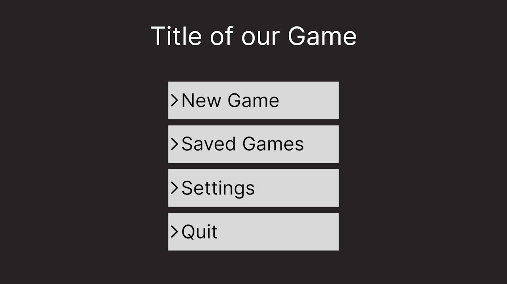
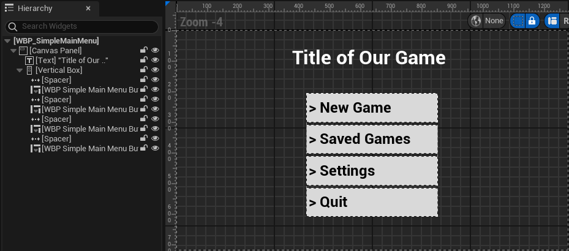
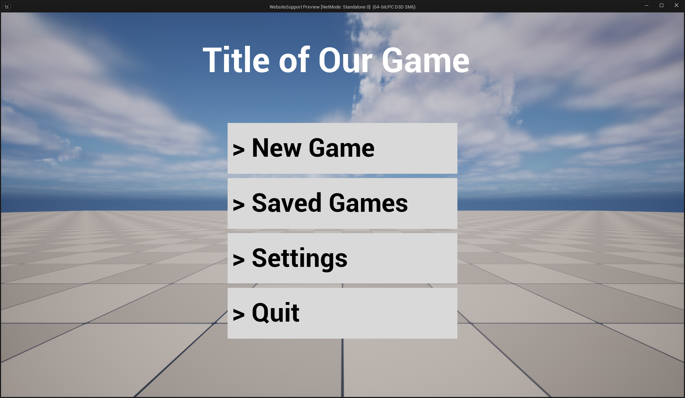

Unraveling the DPI mysteries
Introduction
True responsiveness in UI design is difficult to achieve. Building interfaces that will correctly accommodate a wide breadth of screens aspect ratio and size, often requires a lot of work. To help us, there are a couple of techniques we can use that will automatically rescale the screen. Although they're not perfect, they're often good enough for most cases. In this article we're going to dig a bit into a specific solution to this problem and how it's implemented in Unreal (^_^)
The Problem
Ok, what does "responsiveness" involves exactly, let's try to build an example to demonstrate the problem.
We're going to build a simple vertical menu such as you can find in older games. This menu would present basic options like start a new game, pick a save file, and so on... We're not interested in what the buttons do but more in the general layout.
Here's roughly the idea laid out in Figma :

This UI has been authored in 720p (or a resolution of 1280x720) (this will help me demonstrate a point later üôà). But usually you'd probably author in 1080p since that's the most common screen size.
In any case, That's our target look, we can go and do the most naïve implementation in unreal, which, and don't yell at me, involves a canvas, a vertical box, and a couple of leaf widgets :

Let's spawn it at runtime and see what it looks like !
Perfect üòÑ It appeared exactly as expected ! I didn't go as far as copying the exact font but you get the idea. What's important is that we have the expected layout, and if we go and measure the space between the various elements we'll find them to be the same as the Figma design (ÔΩûÔø£▽Ôø£)～
Ok, we have a screen in 720p, but if we look at the steam hardware survey, most desktop users have a 1080p screen. So what happens if we just stretch our window to match that resolution ?
Uuh, that's wrong ? Maybe we've just been too naïve though, maybe our setup is just really bad. let's put some reasonable anchors at least...
That's a bit better, but the space between the title and the list is pretty wack... I can hear my designer's complaints already, and QA filing weirdly specific bugs. So how do we solve this ?
Well we can start with the very simple observation that we don't actually need to support all arbitrary sizes. In practice, most resolutions falls in, or are close to, a few very specific aspect ratios. Aspect ratio ? That's simply the ratio between the width and the height of your screen, or render area. If we look at the previous hardware survey and instead of sorting by pure resolution, we sort by aspect ratio, we can pull the following table:
| Aspect Ratio | Percent of Users |
|---|---|
| 10:16 | 0.50 |
| 5:4 | 0.29 |
| 16:9 | 85.31 |
| 16:10 | 7.75 |
| 12:5 | 3.11 |
| 32:9 | 0.30 |
| Other | 2.74 |
| Total | 100 |
This means that the vast majority of user's (85%) actually have the same 16:9 aspect ratio. If we add to that the 16:10 aspect ratio which is very similar, we reach a total of 93% of desktop users. This means that 93% of users have similar screens that are just a scaling factor away from each other !
Enter the notion of DPI （＾-＾）
What is DPI and can I eat it ?
Ok what the heck is DPI ? In theory it means Dots per Inch, in practice it's the kind of historically loaded word that have a slightly different meaning depending on context... In our case we'll look at how Windows interprets it first, I recommend taking a look at this page : DPI and Device Independent Pixels
To sum up, it's a bit of a mess due to historical hacks and decisions. DPI mean Dots per Inch, and in the windows world, Dots means Pixels, but not your screen pixel, a device independent pixel. Windows defines those such that 96 of them makes one inch. Buut not your ruler inch ! An inch that's called a "logical inch", which is circularly defined as being 96 device independent pixels, convenient...
Anyways, the point here is to allow the OS to have developers design in a unified unit system, then windows can perform a scaling operation to bring the interface to any arbitrary screen. It's kind of like designing some plans with a meter unit, and then giving them to someone who is free to reproduce them at 1/16th scale, or 2x scale, or whatever scale they deem more appropriate to their current audience.
Alright ! How does this looks like in Slate ? Well Unreal is a well behaved application with regards to DPI
1 2 3 4 5 6 7 8 9 10 11 12 13 14 15 16 | |
This function is where Slate UI rendering starts. As a quick reminder Slate is a hierarchical UI library where things are drawn back to front. The highest level widget is the SWindow, and it recursively draws its content by calling OnPaint, here initiated by PaintInvalidationRoot. Each widget is being given a geometry into which they will accumulate their transform and pass that down to any children. Thus if you scale, rotate or translate a widget, it will be pushed to the geometry and sent down the stack. The children will then inherit all those transformations.
Let's look at GetWindowGeometryInWindow() :
1 2 3 4 5 6 7 8 9 10 11 | |
What this code does is simply apply a uniform scaling transform equal to whatever the OS gives us as a DPI scale factor. Which is then modulated by an arbitrary application scale value. We won't care about this application scale, it's mainly a knob that unreal gives us to rescale the UI without changing OS settings.
If we dig a little bit more, we'll find that this DPI factor comes from this function on Windows, using GetDpiForMonitor :
1 2 3 4 5 6 7 8 9 10 11 12 | |
And this event that SWindow reacts to:
1 2 3 4 5 6 7 8 9 10 11 | |
See the WM_DPICHANGED event page for more detail, it's pretty interesting üòÑ
Getting Physical
Let's test this out ! We want to get a physical understanding of what changing the DPI does. To achieve this we'll be making an editor utility widget associated with some code that will grab a bunch of metrics out of the UI stack and display them on screen. I won't go through the code it's fairly boring boilerplate, feel free to grab it here.
We'll also use this material that draws a Checkerboard in pixel space, such that each square is 25 pixels :
Finally we make this editor utility widget with a few text boxes and our material in the middle, the text above the image will help us track its absolute size, the text below will show its local size (which should be constant).
Here's the corresponding blueprint code for reference, nothing complicated, mostly formatting :
So far so good. Now that we have all this, we can open the Editor Utility Widget ! The designer already spoiled us some insights, but let's watch in its own window without the noise
Awesome ! I've put this widget on a 2560x1440 screen, with an interface scaling of 100% (or 96 DPI, remember the last chapter !) and we can see that everything matches.
Ok, now what happen if we go to the OS settings and modify the user interface scaling, set it to 150% for example ?
And boom ! Watch our utility widget automatically updates without us having to do anything more üòÅ
You'll notice that none of our local sizes have changed, from our editor utility widget local perspective, it's still 1274x682 (well, ± one pixel). And our image's local size is still 100 units. But the screen space values have all been multiplied by 1.5 ! Our window has been physically resized to 1920x1080, and our little checkerboard widget visually grew 2 more squares on each side. Our checkerboard is still centered, our text is still snugly on the top left and top right. If you measure all spacing you'll see they've all grown by 150%. This hopefully demonstrates how Unreal uniformly scales everything from the middle of the window to respect the OS DPI setting üòä
Ok, let's circle back to our initial menu and in-game UI. As usual things are a little bit more complicated there, but don't worry, it's not by much üòÑ
Back in the Game
Where we left it off we had built out menu in 720p. We were distraught, when scaling it to 1080p altered a bunch of properties about the menu that we wanted to keep, like proportionality of different elements and margins.
What can we do about this ? Weeell, I might have lied a little... I disabled some default features of unreal to guide ourselves towards what DPI is at the OS level. You see, if you tried to repro the menu I've shown, you would probably not have seen the same issue when scaling the window up or down. Or even worse, you might have had a hard time making the 720p design look hte same in the designer as in game.
And the reason for that is because Epic's people already thought and implemented that idea of DPI at the OS level, but pushed it at the rendered window level. Instead of using the OS DPI, it uses some heuristics (and we have a choice here) to compute a pseudo DPI for authoring, then it's able to compute a scaling factor taking the current window size, that heuristic, and the authored window size ! This is everything that falls under the "DPI Scaling" category of Unreal's project settings.

So as you can see, in my project I've set the DPI curve such as it returns 1 for all sizes, oopsie... Well let's fix that ! As I've said I've authored the design in 720p so it'll be my scale factor of 1 as a baseline. Then 1080p is 1.5 times that, then we pick a max resolution of 8k so it scales linearly, which is 12 times 720p. Finally we do the same for a minimal resolution, 480p here. See the resulting curve :
720p is our 1.0 scale point, and we want things to be more or less linear from there :)
Let's open our game in 1080p and see the result ! We'd expect it to be nicely scaled up by a factor of 1.5 :3

And that's what we get ! Perfect, now we have a very nice solution to automatically adapt our design to fit most screens resolutions, remember our initial numbers showed approximately 85% of users have close to a 16:9 screen. Interestingly, with the "short side" heuristic and proper anchoring, this solution also works for most wide screens setup. Wide screens are usually born from 16:9 monitors "duplicated" horizontally, kinda like putting 2 1080p monitors side by side. Here's the same screen but with a simulated wide screen monitor aspect ratio.
Anyways, for a PC and console games I usually just keep the default settings, but if you're developing for mobile in portrait mode for example you'll probably want to change those curves to adapt a bit better, although mobile is a whooole other can of worm...
Conclusion
I hope this venture into what is DPI (or what we should probably call PPI now...) was interesting and demystifies this part of the engine :)
Hopefully it also taught you a trick or two about debugging the UI. I recommend testing the metric visualization code in a bunch of situations and try to recompose what transformations happens which makes your widget go from local space to the pixel space metrics ! It can be satisfying to figure out the proper math behind these things, and really helpful in a pinch (we didn't need to do any projections here...)
Annex
Links found in this article and a few more for easy access :
- https://en.wikipedia.org/wiki/Dots_per_inch
- https://learn.microsoft.com/en-us/windows/win32/learnwin32/dpi-and-device-independent-pixels
- https://learn.microsoft.com/en-us/windows/win32/hidpi/setting-the-default-dpi-awareness-for-a-process
- https://learn.microsoft.com/en-us/windows/win32/hidpi/wm-dpichanged
- https://github.com/Sharundaar/UECodeGolfing/blob/main/Source/UIMetrics.h
Checkerboard shader code :
1 2 3 4 | |